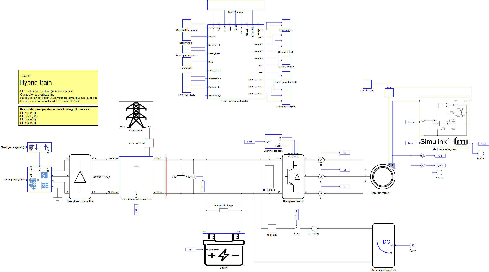
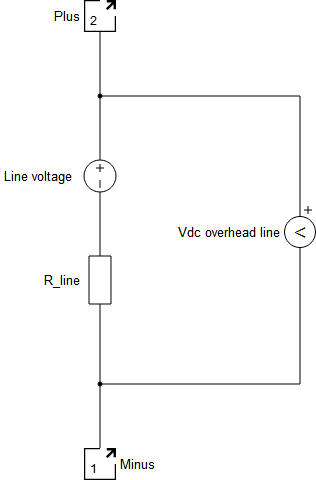
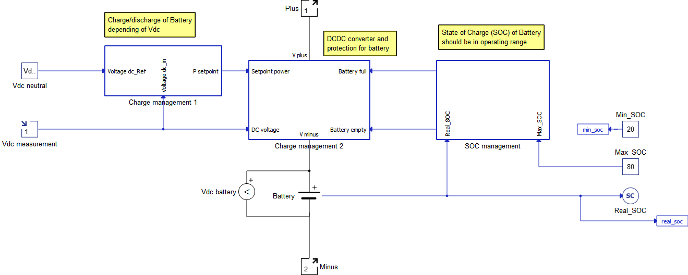
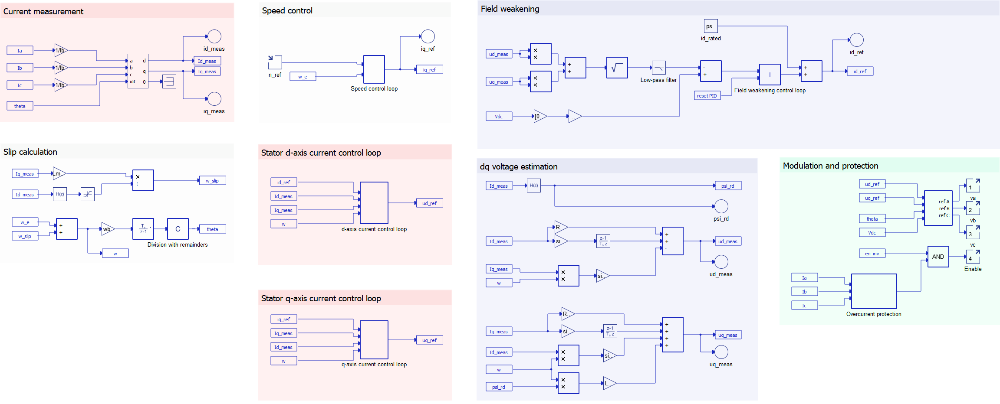
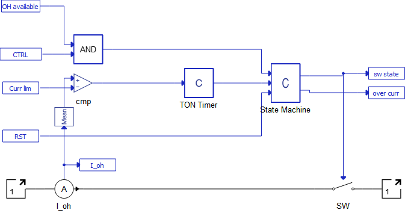
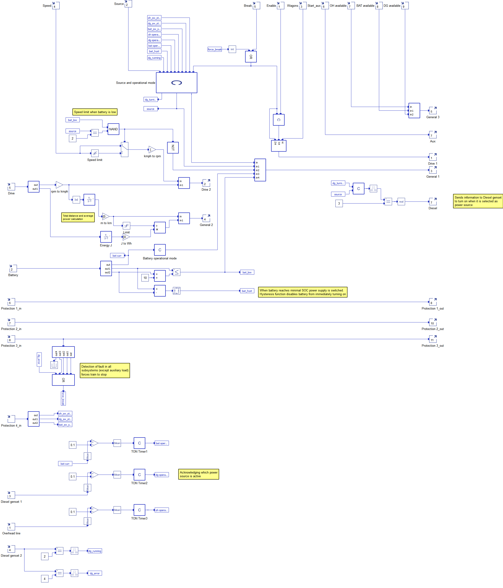
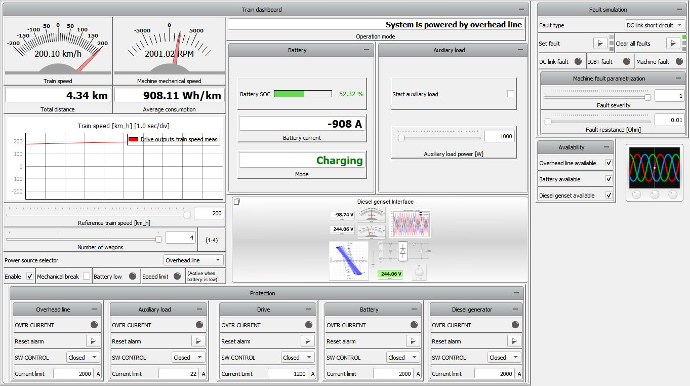
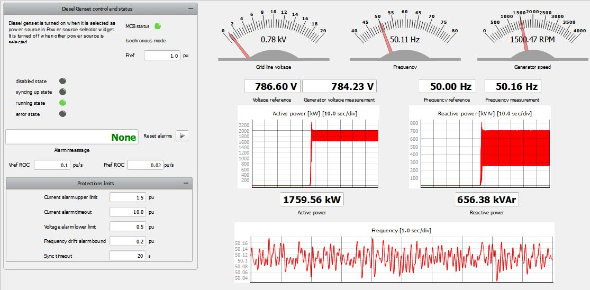
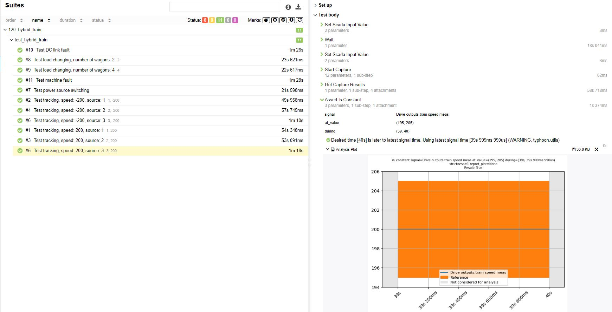

Hybrid Train
Demonstration of the Hybrid Train model which integrates mutliple loads and sources in a single system under a central management system.
Introduction
This model covers a hybrid train that can be powered by three different power sources: DC Overhead Power Line, Electric Battery, or a Diesel Genset. All three power sources are connected to a Power Source Switching Device, which links the power sources to the Electric Drive and Auxiliary Load. The Electric drive consists of a Current-Regulated Voltage Source Inverter (CRVSI) and a 1000 kW Three Phase Squirrel Cage Induction Machine (henceforth referred to as Induction Motor) connected to it. Indirect Field-Oriented Control is implemented. The mechanical part of the model is implemented as a Simulink® model, which is imported into Typhoon HIL Schematic Editor using FMU Import. The Auxiliary Load is modeled as a DC Constant Power Load. The model also encompasses subsystem protection, making it suitable for testing electric faults. Additionally, a Train Management System that supervises and controls all other subsystems is implemented.
This application example model does not incorporate any manufacturer’s design of the DC Overhead Power Line, Electric Battery, or any other subsystem. Instead, it illustrates the utilization of pre-designed power electronics and microgrid components for constructing a high-fidelity system-level application. You have the flexibility to customize it to align with your specific requirements. HIL SCADA is used for simulation, TyphoonTest IDE for writing tests. Access to the Microgrid Toolbox is necessary for this example.
Model description
As previously mentioned, the Electric Drive can be powered by three different power sources: Overhead DC Power Line, Electric Battery, or Diesel Genset (Generic). In all three cases, the Electric Battery is connected to the CRVSI. When the DC Overhead Power Line or Diesel Genset is used, the battery acts as an electric load for the power source (in that case, the battery is being charged). When both the DC Overhead Power Line and Diesel Genset are disconnected, the battery acts as an electric source and is used to power the Electric Drive. Model is presented in the Figure 1.

The DC Overhead Power Line is modeled as a simple voltage source with its own voltage and series resistance, and is presented in the Figure 2.

For Diesel Genset modeling, the Diesel Genset (Generic) component is used, along with its Diesel Genset Generic UI for interfacing with the component.
An additional impedance is added inside the Diesel Genset component because a three-phase diode rectifier is connected to its output, and this additional impedance enhances the quality of AC/DC conversion. The three-phase diode rectifier is modeled using the Three Phase Diode Rectifier.
The Electric Battery is modeled as a Battery component and a Signal Controlled Sources component connected in series. The Signal-controlled Current Source thus controls the battery's current and regulates the rate at which the battery is charged and discharged. It serves as a simplified version of a DC-DC converter to which the battery is connected. The battery is charged and discharged with constant current. IThe implemented battery control method enables observation of the battery's State of Charge (SoC) and imposes limitations on the maximum and minimum battery power. In this model, the battery's state of charge is always maintained between 20% and 80%, as this interval represents a typical optimal usage range for real electric batteries. Control part is presented in the Figure 3.

The Charge Management 1 Subsystem dictates the battery’s power. If the measured battery voltage is greater than the neutral DC voltage (which is chosen to be 990 V) the battery is charged. If the battery voltage is lower than the neutral DC voltage the battery is discharged. The difference between measured DC voltage and neutral DC voltage is used to calculate the battery's power reference.
The Charge Management 2 Subsystem contains a Signal-controlled Current Source, deep discharge protection, overcharge protection as well as overcurrent protection.
The SOC Management Subsystem enables the battery’s state of charge to be maintained between 20% and 80%by sending a signal to the deep discharge and overcharge protection.
Both a 10 kΩ resistor and a 470 mF capacitor are connected to the battery's output, also referred to as the DC link. The resistor is used to model the passive discharge of the battery, whereas the capacitor is used to enhance the quality of the voltage used in the CRVSI.
The Auxiliary load, modeled as a DC Constant Power Load, is also connected to the DC link. The power of the DC Constant Power Load is set by SCADA Input.
Multiple subsystems are used for implementing the control of CRVSI, as shown in Figure 4. The measured phase currents and the angle theta are provided as inputs toh the ABC to DQ component, which is calculated in the Slip calculation part of the subsystem. It should be emphasized that the control is implemented in the per-unit system. Four control loops can be noticed: speed, stator d-axis current, stator q-axis current, and the stator d-axis reference current. The PI controller is implemented in the first three control loops, but in the fourth control loop the I controller is implemented. Anti-windup as well as output limitations are used in all four controllers. Cascade control is implemented, with the stator q-axis current loop being the inner loop of the speed loop. The algorithm to find the measured d-axis and q-axis stator voltage is implemented because these parameters are used as inputs for the Field Weakening algorithm.

The mechanical part of the model is realized by a Simulink® model, as mentioned earlier. It is worth emphasizing that the same mechanical model could be realized as Schematic Editor model using signal processing components. Still, this implementation is used to demonstrate that models can be imported from Simulink® to Schematic Editor using FMU Import.
It is important to note that, in this case, the constant component in the Simulink® model has a value of Tn/(3*wn), where Tn represents the rated torque and wn represents the rated mechanical angular speed. This demonstrates that the properties of components used in the imported Simulink® model can be assigned in a Schematic Editor Python Model Initialization Script executed during the validation and compilation of model in the Schematic Editor.
The torque-speed characteristic of the mechanical load is approximated as linear. The steepness of the characteristic is determined by the number of wagons (ranging from one to four). The equation for the characteristic is as follows:
A mechanical brake is also implemented, which involves disabling CRVSI and applying constant torque until the angular speed reaches approximately 0 rad/s.
Electrical protection of the components is based on a Circuit Breaker. The Circuit Breaker is implemented differently depending on the specific component it serves within the system. For the DC Power Overhead Line and the Auxiliary Load, it is realized as a part of the Circuit Breaker Subsystem which is presented in theFigure 5.
. However, in the cases of the Diesel Genset, Electric Drive, and Electric Battery, the Circuit Breaker is integrated into the existing mechanisms for turning these components on and off. In these instances, the protection functionality is provided by the Protection Subsystem. Despite these variations in implementation, the overall performance and functionality of the Circuit Breaker remain consistent throughout the system.

The state of the switch is, among other things, determined by the condition that the measured current is not allowed to exceed the assigned current limit. Additionally, the switch can be restarted and controlled by the SCADA Input (covered in detail in the Simulation section). The use of a TON Timer (ON delay timer) allows the protection system to trigger when the measured current exceeds the current limit for a predefined amount of time. This disables the protection system from triggering due to short current impulses, such as when a capacitor is discharged and connected to the real voltage source. The TON Timer is realised by a C function component connected to a Mean Value component.
While the Diesel Genset Generic UI already implements a more advanced protection scheme for the Diesel Genset Generic, a Circuit Breaker similar to the one used for the Battery and other subsystems is implemented in order to allow for selectivity of protection.
The DC link fault and Machine fault subsystems are used for the simulation of faults. IGBT faults are inherently implemented in CRVSI.
The Train Management System (TMS) is the subsystem of the model closely tied to the Simulation of the model. The inputs and outputs of the TMS can be seen in Figure 6. The TMS is used to forward user commands during the simulation to the other parts of the model. For example, reference speed provided during the simulation is forwarded to the Converter Controller of the Electric Drive. The TMS serves not only to forward user-specified values but also to calculate the average consumption of the Induction Motor and to enable speed limitations when the battery is nearly exhausted, among other functions. Additionally, the TMS provides feedback from the model, such as measured train speed and the operational mode of the battery, etc. You can gain insight into the other functions of the TMS by referring to Figure 6 and Figure 7.

Simulation
This application comes with a pre-built SCADA panel, shown in Figure 7. The panel offers most essential user interface elements (widgets) to monitor and interact with the simulation in runtime. You can customize it freely to fit your needs.

The SCADA panel consists of two main parts: Train dashboard and Fault simulation.
The Train dashboard emulates a real Train dashboard that a driver of the hybrid train would have. It includes the train speed measured in km/h, machine mechanical speed in RPM, total distance in km, and average consumption in Wh/km. A widget that shows the change of speed over time is added to better observe speed dynamics. Sliding widgets are used to set the Reference train speed, number of wagons, and the auxiliary converter power. A Combo box is used to select the power source. The Start checkbox is used to start the Electric drive, Start aux to start the Auxiliary load, and Mechanical break to turn off the CRVSI and apply the mechanical break. Two LED indicators are added to display when the speed limit of 100 km/h is reached: one when the battery acts as a power source despite a State of Charge lower than the 30%, and the second to inform the driver whenever the battery state of charge is lower than 30%.
The Bar Graph widget displays the battery State of Charge, Current, as well as its operating mode (charging/discharging/idle). Operational mode provides textual information about the power source, which might differ from the power source selected in the combo box. For example, when the battery is discharging and it reaches 20% SOC, the TMS will automatically switch power supply to the DC Overhead Power Line or Diesel Genset.
The Protection subgroup of the train dashboard lets you directly interface with the protections implemented in the model (Figure 7). The implementation of all subgroups is the same. LED is used to signal when protection system is triggered. If a protection system is triggered, its alarm must be reset manually. Switch state can be changed manually by choosing if the switch is closed or open. A closed switch can be opened as a result of protection system triggering. Current limit sets the current limit required for triggering the protection system. If a protection system is triggered (including inherent Diesel Genset Generic protection, but excluding the protection system of auxiliary load) the CRVSI turns off and applies the mechanical break.
The Diesel genset Interface subgroup provides a more detailed look into the operation and protection interface of the Diesel Genset Generic component, as shown in Figure 8.

The Fault simulation group contains widgets that would be invisible in the real train dashboard. As previously mentioned, three types of faults can be set – DC link short circuit, IGBT fault, and Machine fault. Macro buttons are used to set and clear individual faults, chosen in the Fault type combo box. Three LEDs are used to signal when each of the faults is active. The Machine fault is a Inter-Turn Short Circuit fault and can be parametrized by parametrizing fault severity and fault resistance.
Test automation
The provided test script evaluates the hybrid train capabilities of reaching maximum speed in both directions for different power sources. Additionaly, the test validates that the power source change while the train is operating does not impact the performance of the hybrid train. Lastly, the protection function for the machine and DC link faults are validated.

Example requirements
Table 1 provides detailed information about the file locations and hardware requirements for running the model in real-time, followed by the HIL device resource utilization when running the model using this minimal hardware configuration. This information is provided to help you with running and customizing the model as you see fit.
| Files | |
|---|---|
| Typhoon HIL files |
examples\railway\hybrid train hybrid train.tse hybrid train.cus |
| Minimum hardware requirements | |
| No. of HIL devices | 1 |
| HIL device model | HIL101 |
| Device configuration | 1 |
| HIL device resource utilization | |
| No. of processing cores | 2 |
| Max. matrix memory utilization | 66.41% (core1) 99.95% (core0) |
| Max. time slot utilization | 29.55% (core1) 35.0% (core0) |
| Simulation step, electrical | 1 µs |
| Execution rate, signal processing | 100 µs |
Author
[1] Marko Alagic